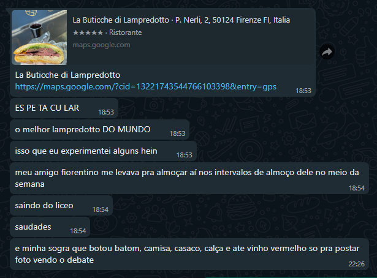

Lampredotto, ricetta tradizionale fiorentina.
Il lampredotto è un piatto della cucina tradizionale fiorentina a base di trippa. Vediamo come farlo: Trattasi di pochi passaggi e pochi ingredienti,
senza fronzoli soprattutto nella cottura. È un panino e, in quanto tale, è possibile fare qualche aggiunta: formaggio e verdure sono sempre ben accetti.

Gli ingrediente (per 4 persone)
1 kg di abomaso già bollito
qualche bacca di ginepro (o 2 chiodi di garofano)
Procedimento:
- Metti in una grossa pentola le cipolle, le carote e la costa di sedano mondate, lo spicchio di aglio spellato, l’alloro, il pomodoro tagliato in 4 pezzi, il prezzemolo, la bacche di ginepro e qualche grano di pepe.
- Aggiungi 3 litri di acqua fredda, metti il coperchio, porta a bollore, aggiungi il sale e fai cuocere a fiamma dolce per una quarantina di minuti. Nel frattempo, lava l’abomaso, fallo cuocere in acqua bollente per circa 10 minuti e poi scolarlo.
- Trascorsi i 40 minuti di cottura necessari a rendere il brodo vegetale saporito, tuffarci dentro la trippa e farla lessare dai 40 ai 90 minuti fino a quando, bucandola con i rebbi di una forchetta, risulterà morbida.
- Poi spegni il fuoco, lascia riposare il lampredotto per una decina di minuti nel brodo di cottura, scolatelo, mettilo sul tagliere e tagliatelo grossolanamente a striscioline.
E, secondo il mio amico Francesco Dal Ri, il migliore ristorante da mangiare il lampredotto a Firenze è La Buticche di Lampredotto. Qui cosa lui mi ha detto:
